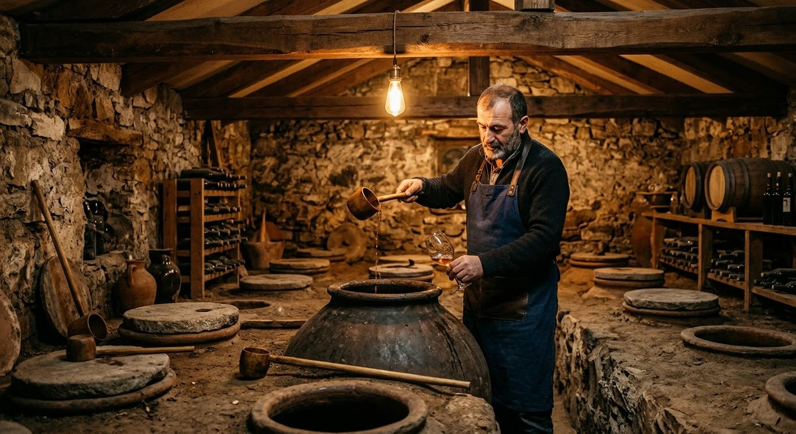
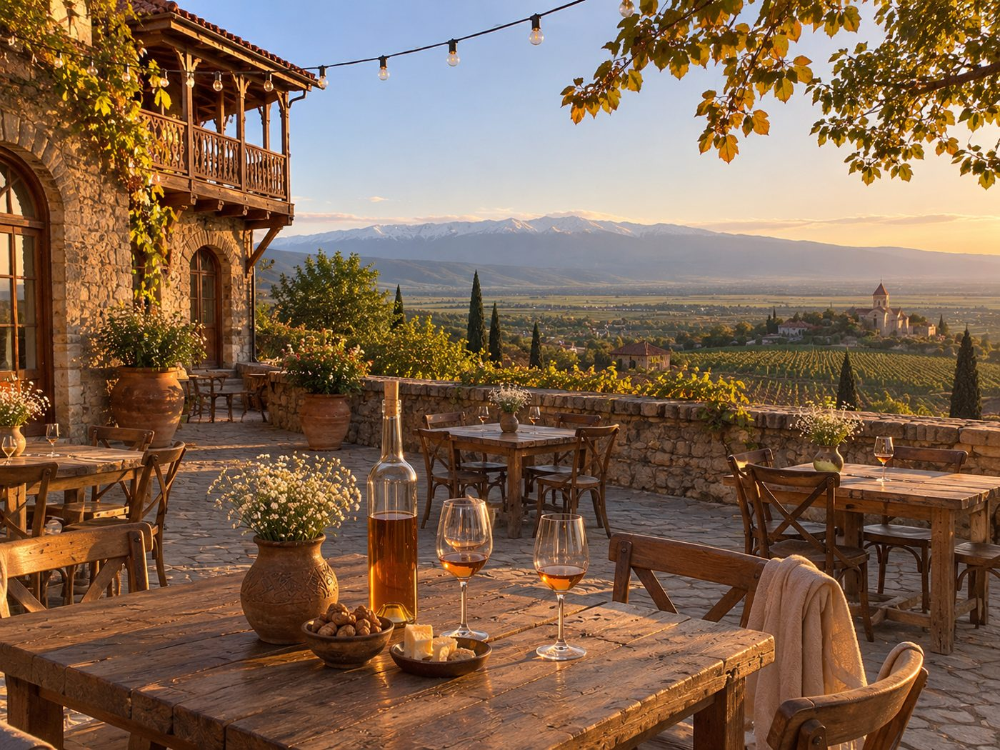

Молодое вино 2026 уже в погребе
Ртвели позади, первое вино нового урожая можно попробовать на дегустации каждую субботу.
Семейная винодельня в Сигнахи с террасой над Алазанской долиной
Мы делаем вино в квеври так, как его делали наши прадеды: саперави, ркацители и киси из собственных виноградников. Каменная терраса с видом на долину и горы вмещает до 150 гостей. Здесь проходят дегустации, семейные праздники и свадьбы.

Ртвели позади, первое вино нового урожая можно попробовать на дегустации каждую субботу.
Реконструкция марани и террасы завершена. Новый банкетный зал, обновленный погреб и та же любимая терраса. Дегустации возобновлены с сегодняшнего дня.
С 1 по 25 августа марани и терраса закрыты на реконструкцию. Дегустации и мероприятия в эти дни не проводятся. Возобновим работу 26 августа. Спасибо за понимание!
Терраса снова принимает гостей. Бронируйте даты для праздников заранее: майские субботы почти разобраны.
Больше 200 гостей за сезон. Вино этого года будет особенным.
Частные мероприятия на террасе и в зале, 2026
4,7 · 312 отзывов
Amazing view from the terrace, the amber Kisi was the best wine of our trip!
Дегустация с экскурсией огонь, хозяин Леван сам все рассказывает. Брали домой 6 бутылок.
Lovely family place. A bit hard to find, follow the signs from the old town wall.
Отмечали юбилей мамы на террасе, все было вкусно и душевно. Минус звезда за долгое ожидание горячего.
5 вин из квеври, сыр и хлеб из тонэ
Погреб, виноградник и 7 вин
Ужин с вином и видом на закат

Свадьбы и праздники мы проводим вместе с проверенными агентствами. Бронирование террасы возможно с мая по октябрь, кроме дней технического обслуживания.